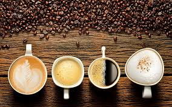

Are you crazy for Coffee?
There are so many types and flavors of Coffee

| Coffee roasts |
|
|
| Light roast |
Light city |
Half City |
Cinnamon |
| Medium Roasts |
City |
American |
Breakfast |
| Dark Roasts |
High |
Continental |
Espresso |
History on Coffee is here!
Coffee has been in America for over 300 years!
Coffee History

Coffee is a morning must.
Seed to Cup
- Planting
- Harvesting Cherries
- Processing Cherries
- Drying the Beans
- Milling the Beans
- Exporting the Beans
- Tasting the Beans
- Roasting the Coffee
- Grinding the Coffee
- Brewing the Coffee